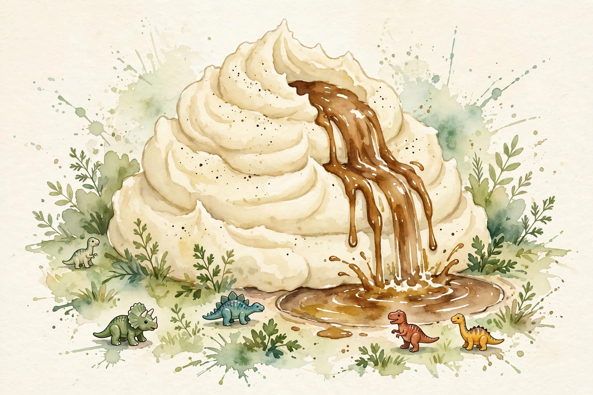
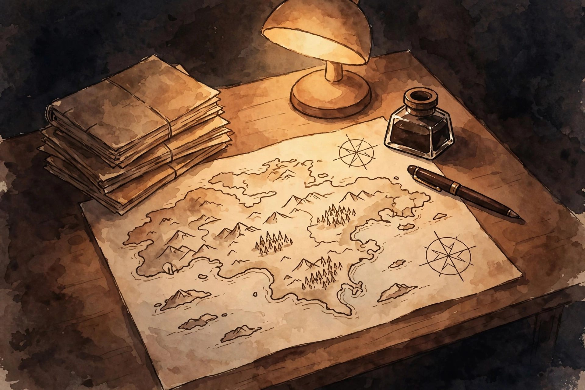

Deep Questions · Companion
Stop Doom Scrolling
Fresh eyes on the apps, the white-knuckle trap, the six-item toolkit, and the 30-day declutter.

Cal Newport. Photo: robertglazer.com (Elevate Podcast). Episode 288: the man who never used social media takes the tour.
Watch. The official episode video. Use the chapter menu above to jump to any section of this companion as you listen.
The Wisdom Index: every nugget in this companion
Part 1
The Fresh-Eyes Tour
Newport is famous for never using social media. His 2016 TED talk, Quit Social Media, passed 10 million views. His 2019 book Digital Minimalism sold hundreds of thousands of copies. But he wondered: what if the apps evolved into something genuinely valuable while he was not looking? So on the show, live and unrehearsed, he loaded up the apps to see.
Twitter served a smug takedown of Taylor Swift hugging Travis Kelsey after the Super Bowl, plus arguing over a farmers' protest in India. Instagram served gym bodies, vacations, and curated happiness. TikTok served an endless flip of oddities: a fried avocado, and a mashed-potato mountain with a gravy volcano and chicken-nugget dinosaurs, set to the Jurassic World theme.
this stuff is really weird
Cal Newport, fresh eyes on social media · Deep Questions

Illustration. The mashed-potato volcano: the state of the apps in 2024. AI-generated watercolor made for this page.
Nugget 1 · The experiment
The fresh-eyes tour
What happened. Source fact Newport, who never used social media, toured Twitter, Instagram, and TikTok live on the show to find out if the apps had anything worth his time.
Why it matters. Interpretation The outsider's view is data. Insiders stop seeing the water they swim in.
The principle. Interpretation Audit your defaults with fresh eyes, on purpose, once in a while.
Part 2
The 2005 Test
His verdict: nothing he saw was intrinsically evil or bad in isolation. But as the foundation of a culture's leisure, it was strange. His test: bring a time traveler forward from 2005. The traveler would not be horrified by any single video. They would be perplexed that this is the core of how we engage with the world outside work. Gravy down a mashed-potato mountain is fine. As the main thing, it is not the Algonquin Roundtable.
Nugget 2 · The perspective
The 2005 test
What happened. Source fact Newport argues a 2005 time traveler would find it perplexing that short videos and celebrity smugness form the foundation of modern leisure.
Why it matters. Interpretation Judge a habit by its share of your life, not by its worst single instance.
The principle. Interpretation Fine in isolation can still be a strange foundation.
Part 3
The White-Knuckle Mistake
Convinced, what should you do? Newport names the biggest mistake first: white-knuckle abstinence. Fed up with the apps, people declare no more phone, then feel righteous about it. You know them because they announce it constantly: they will work their abstinence into any conversation, even in a burning building. It does not work, and the righteousness is the tell.
Nugget 3 · The trap
The white-knuckle mistake
What happened. Source fact Newport says the biggest mistake is to jump straight to white-knuckle abstinence, which fails and breeds performative righteousness.
Why it matters. Interpretation Abstinence as identity is still an identity built around the phone.
The principle. Interpretation Do not start by banning. Start by building.
Part 4
The Void
Why does abstinence fail? Digital minimalism's answer: the tools pushed other things out of your life, then filled the void those things left. Quit cold and you face the yawning void directly: boredom, your own thoughts, anxiety. It is deeply uncomfortable, like a detoxing addict shaking and wondering what to do next. The phone was a low-quality answer to real needs. Remove it with nothing in its place and the needs drag you back.
Nugget 4 · The mechanism
The void
What happened. Source fact Newport argues the apps filled a void left by displaced activities, so pure abstinence leaves you facing boredom and anxiety with no alternative.
Why it matters. Interpretation The craving is information. It tells you which needs are unfed.
The principle. Interpretation Fill the void first. Then the phone has nothing to offer.
Part 5
The Six-Item Toolkit
So step one is not to touch the phone. It is to build the alternatives first, while still using the phone as before. Newport prescribes a high-quality leisure toolkit of six areas, each engaged to some degree. One, reading: lots of it, fun and serious. Two, high-quality video: TV, movies, documentaries, work with real creative energy behind it. Three, a skill-based hobby, where improving skill improves results and creates a feedback loop the mind finds more compelling than distraction.
Four, an exercise-based hobby with streaks and marks to hit, which lifts you out of the low-energy torpor the phone feeds on. Five, communities that meet regularly: standing movie nights, monthly dinners, leagues, groups. Six, adventures: the away game, the special exhibit, the waterfall at the end of a two-mile hike. Things above and beyond the easy.
The high-quality leisure toolkit
Source: Deep Questions, Stop Doom Scrolling, the six-item high-quality leisure toolkit. Labels are paraphrase.
Nugget 5 · The build
The six-item toolkit
What happened. Source fact Newport prescribes six leisure areas, reading, quality video, skill hobby, exercise hobby, regular communities, adventures, built up before any phone reduction.
Why it matters. Interpretation Alternatives are infrastructure. Build them before you need them.
The principle. Interpretation Add before you subtract. Every time.
Nugget 6 · The competition
Higher fidelity wins
What happened. Source fact Newport argues the phone's monopoly on attention dissolves once it competes with higher-fidelity satisfactions of the same needs.
Why it matters. Interpretation You do not beat the phone by fighting it. You outbid it.
The principle. Interpretation Make the alternative better, and the phone loses on merit.
Part 6
The 30-Day Declutter
Step two is the declutter, and Newport stresses the word. Not a detox, a break before returning to old habits, but a declutter: step away to make permanent change. With the toolkit humming, take thirty days away from the optional digital technologies: TikTok, Instagram, Twitter. Lean hard into the six areas instead. You are not staring into the void. You are busy.
The thirty days teach you two things: what you actually miss, and what you actually care about. At the end, you decide what, if anything, comes back. Anything readmitted must clear two bars: it must be genuinely valuable, and it must return with clear rules for how and when you use it.
Nugget 7 · The reset
The 30-day declutter
What happened. Source fact Newport prescribes thirty days away from optional social technologies, supported by the toolkit, ending with deliberate decisions about what returns and under what rules.
Why it matters. Interpretation Distance creates the data that intention needs.
The principle. Interpretation Nothing returns by default. Everything re-auditions.
Part 7
The Baseball Rules
Newport's example shows what rule-bound return looks like. Suppose you realize you genuinely value baseball trade rumors during hot stove season. Twitter comes back, but on terms. Twenty minutes at lunch. You follow nobody. You bookmark four reporters, two for your team and two national. Desktop only, at work. Never on the phone, never the endless timeline.
The value is captured. The side effects are fenced out. That is a digital life on your terms. It supports what you value and trims the rest. The point is not whether the technology is good or bad. The point is intention, and intention needs a life better than the mashed-potato volcano.
Nugget 8 · The terms
The baseball rules
What happened. Source fact Newport's example: Twitter returns for baseball rumors with rules, twenty minutes at lunch, four bookmarked reporters, desktop only, no follows, no phone.
Why it matters. Interpretation Specificity is the whole trick. Vague rules are decorative.
The principle. Interpretation Every returning app gets a written contract: what, when, where, how long.
Part 8
The National Enquirer Test
Newport offers a final analogy for the habit. Glancing at the apps now and then is like reading the tabloid at the supermarket checkout: who cares. But three to four hours a day, seven days a week, is the habit of someone who reads the National Enquirer for hours each day. At that point you say: buddy, we need a better hobby. That is implicitly what we have all ended up doing.
He adds a joke from the Super Bowl. Snapchat ran an ad arguing it was better than other social media, despite sitting at the core of the teen mental health crisis. His verdict:
an anti-fentanyl ad sponsored by crack
Cal Newport on Snapchat's Super Bowl ad · Deep Questions
Nugget 9 · The mirror
The National Enquirer test
What happened. Source fact Newport compares casual app use to checkout-line tabloids and heavy use to a person who reads the National Enquirer three to four hours daily, and jokes that Snapchat's ad was an anti-fentanyl ad sponsored by crack.
Why it matters. Interpretation Dose makes the poison. Name your dose honestly.
The principle. Interpretation Count the hours. Then decide if the tabloid deserves them.
Part 9
Tolkien's Stolen Time
The episode closes with a slow-productivity coda. A curator of medieval manuscripts at Oxford sent Newport a quote from a letter Tolkien wrote to his publisher, Stanley Unwin:
writing stories in prose or verse has been stolen
J.R.R. Tolkien, in a letter to Stanley Unwin, via an Oxford curator · Deep Questions
Tolkien meant the writing was stolen, often guiltily, from time already mortgaged to the grind of professional duties: Oxford lecturing, administrative detail, grading, a field transforming under him. His peace came from returning to the fantastical worlds of his own making. Newport reads it as slow productivity a century early: fewer things, slower pace, obsession with the quality of the few. Not all of us will write The Lord of the Rings. But the joys of slowness are available to anyone who steals back the time.

Illustration. Tolkien's desk: the slower, more engaging world. AI-generated watercolor made for this page.
Nugget 10 · The coda
Tolkien's stolen time
What happened. Source fact Newport shares Tolkien's letter to Unwin about writing time stolen from mortgaged professional hours, reading it as an early exemplar of slow productivity: fewer things, slower, better.
Why it matters. Interpretation The overload is not new. Neither is the escape route.
The principle. Interpretation Steal back the hours. Spend them on the work that matters.
The episode in seven lines
- Fresh eyes see it: the apps are fine in isolation, strange as a foundation.
- White-knuckle abstinence fails. It leaves the void untouched.
- Build the six-item toolkit first: reading, quality video, skill, exercise, community, adventure.
- Higher-fidelity satisfactions outbid the phone on merit.
- Then declutter for thirty days. Nothing returns by default.
- Readmitted apps get written contracts: what, when, where, how long.
- Steal back the hours like Tolkien. Spend them on the work that matters.
Distilled from Deep Questions, Stop Doom Scrolling with Cal Newport (episode 288). Video: youtube.com/watch?v=PqXz2Yl_M6k.